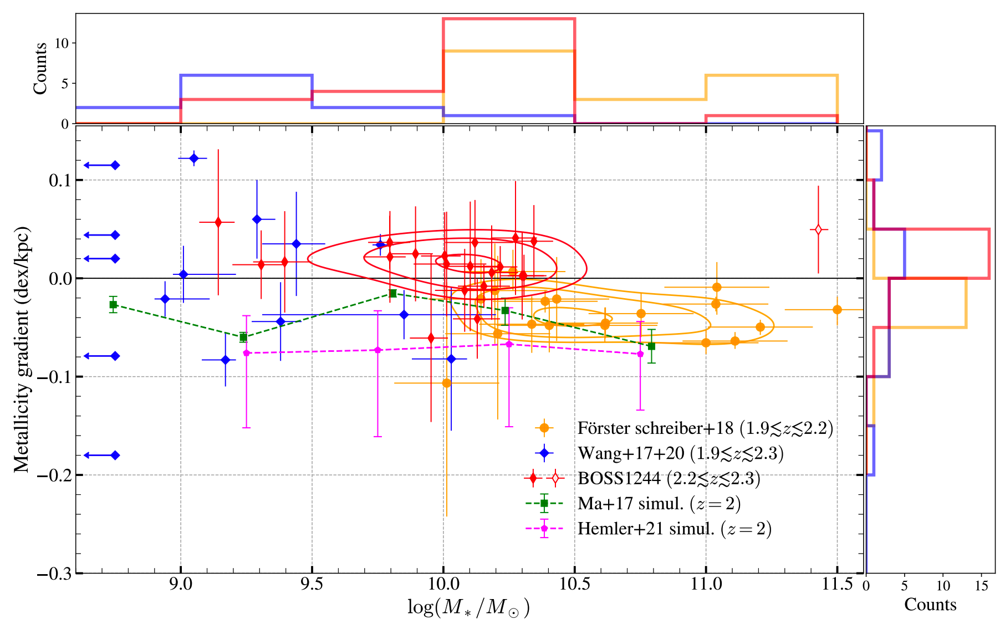

First Census of Gas-phase Metallicity Gradients of Star-forming Galaxies in Overdense Environments at Cosmic Noon
Li, Wang, Cai, et al. (2022)
link to this paper: https://iopscience.iop.org/article/10.3847/2041-8213/ac626f
In this work, we use the HST slitless spectroscopy (grism) to study the member galaxies in an extremely massive protocluster BOSS1244. With the spatially resolved emission maps ([OIII],[OII],Hb,Ha,Hg) obtained by HST grism, we are able to measure the spatial distribution of metallicity based on empirical strong line calibrations. We find a notable fraction of inversed gradients (the relative abundance of oxygen increasing with galactocentric radius) in our sample. We interpret this trend as the effects of enhanced cold mode accretion in protocluster environments, thus stressing the importance of gas accretion in galaxy evolution in protoclusters.

In the cold mode accretion scenario, the cold gas is able to accrete to galaxies's disk through cosmic filaments, which is especially important in protocluster environments. The cold gas dilutes the central metallicity and inverts the galaxies' metallicity gradients (Cresci, et al. 2010).
